w16 <<
Previous Next >> Assignment 1
w17
編輯新皮膚
將老師的車子套用我們的皮膚上去包括車體、輪胎、輪鼓和避震器
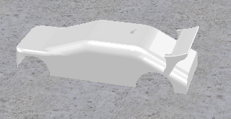  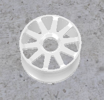
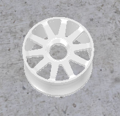 
以下是兩張圖得比較
原圖:
套用後的圖:
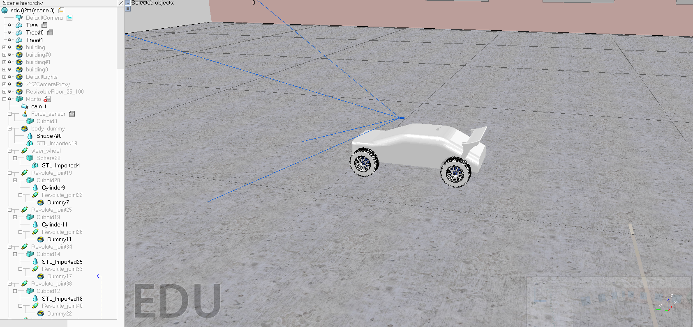
Remote API
先安裝老師給的資料夾(CoppeliaSim的部分)
下載完後如下圖，而我們需要的部分則是car_model.py的遠端端口控制(.py檔)和sdc.ttt的場景檔內部有老師的小車。
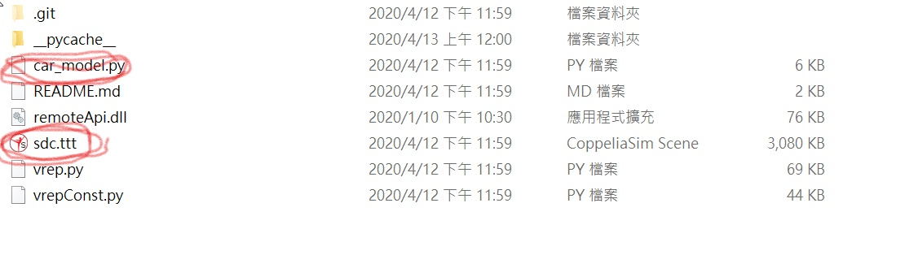
接著執行car_model.py的遠端端口控制>>(可用編輯器go或使用以下指令 ):
python car_model.py
會發現有缺少模組所以必須使用pip install將缺少的模組灌起來
pip install
但安裝時意外發現pip版本過舊(numpy是有安裝成功的)
所以必須將pip做更新的動作重裝(get-pip.py)
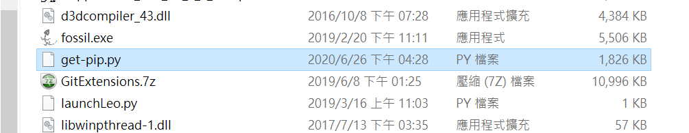
接著去執行它做重裝的動作
python get-pip.py
接著繼續裝缺少的模組cv2，但會發現無法安裝這個模組

我根據下面錯誤的訊息(No matching distribution found for cv2)去網路找文章找到解決的方法

根據他的說法可以安裝opencv-python這個模組就會有相應的cv2出現
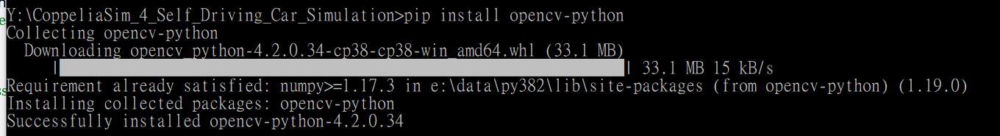
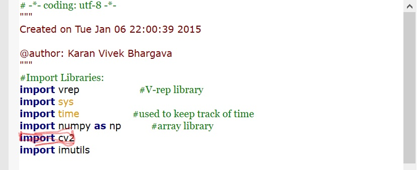
根據上述文章的敘述會發現其實跟老師要我們安裝的模組相同
接著安裝最後的模組imutils
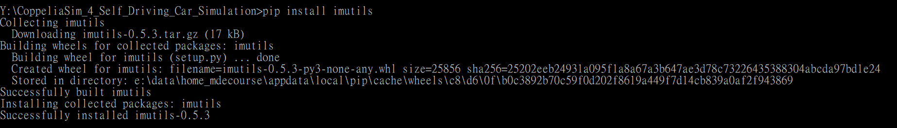
然後將car_model.py的第108行改成如下:

接著點開CoppeliaSim的模擬和遠端car_model.py>>go就完成了

然後要注意車子之所以會看到外部影線是因為我們給的camera的線程子城式19999對應到外部car_model.py >>clientID19999才能做連接
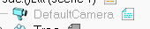
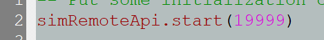

以下是測試影片:
以下是操作影片:
w16 <<
Previous Next >> Assignment 1